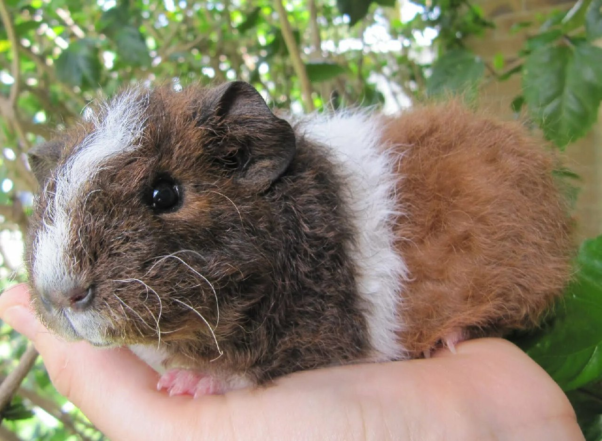
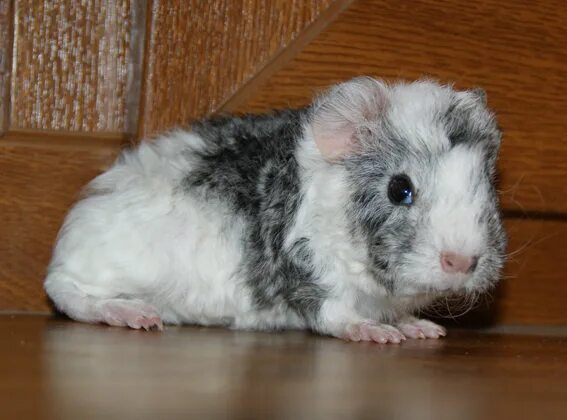
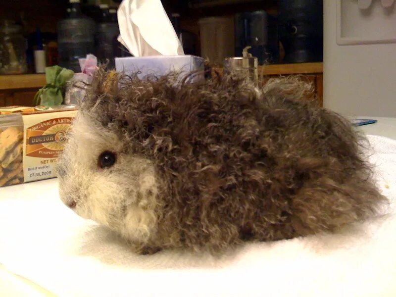
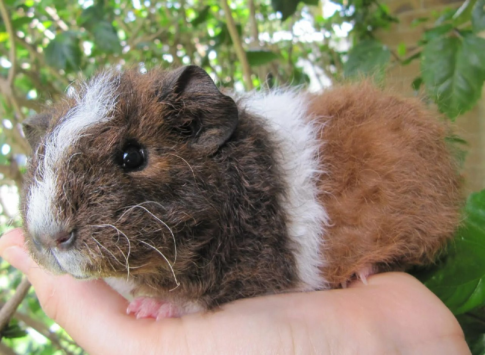
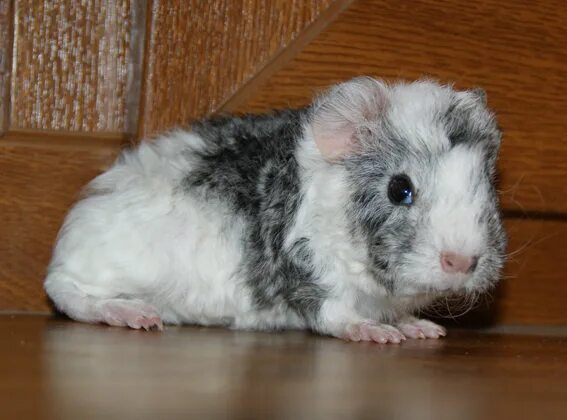
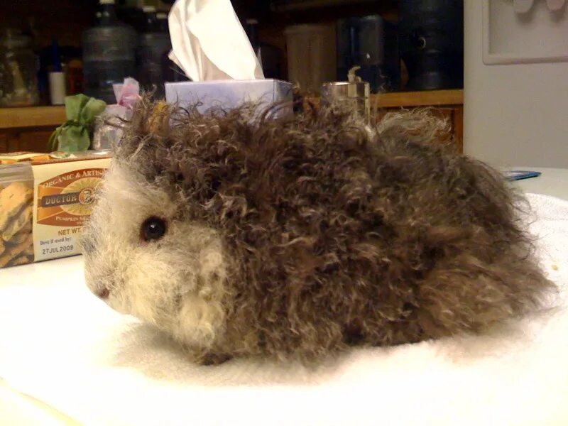
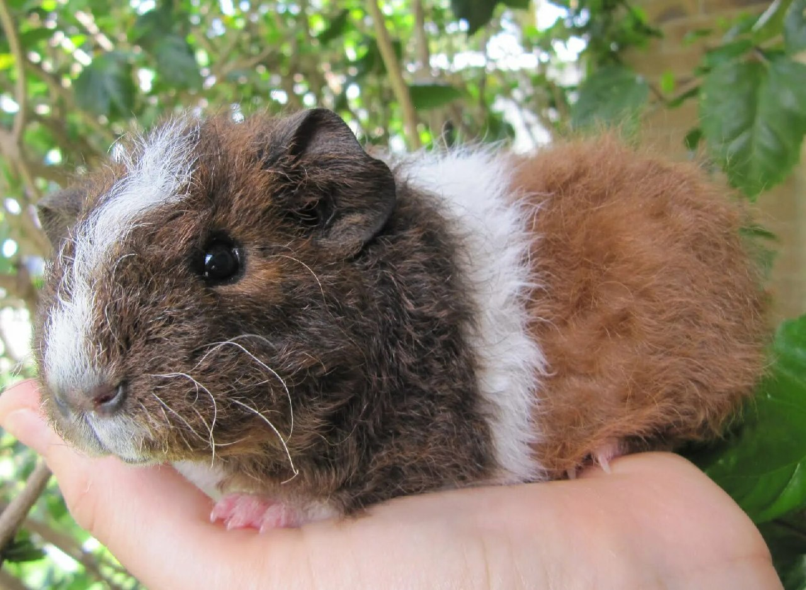
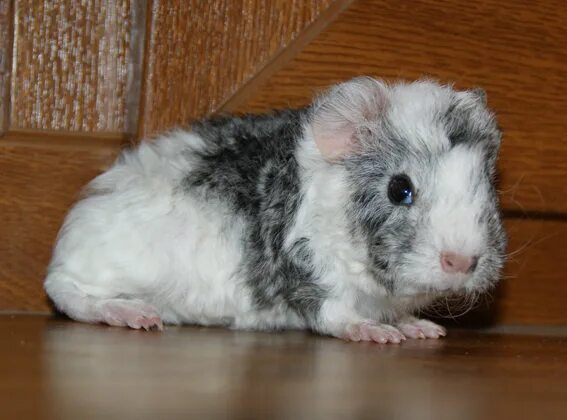
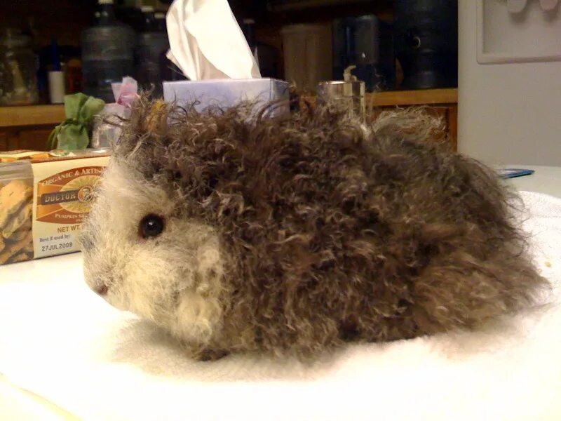

Морські свинки цієї породи були спочатку виведені як різновид лункарії, але так як генетично вони відрізняються і популяція їх зростає, селекціонери домагаються виділення окремої породи. Відмінна особливість цих вихованців жорстка кучерява шерсть, що стирчить в різні боки. Лункарії мають легкі завитки, керлі - жорсткі кучері, які створюють незвичайну скублену шевелюру, крім того довжина волосків у них значно менша. Забарвлення буває різним, найбільш незвичайно виглядають агуті.
Купання та розчісування у цього вихованця проводяться часто, розчісують його один раз на день, а купають у міру забруднення приблизно пару разів на місяць. Як і у всіх жорсткошерстих морських свинок, обов'язково проведення триммінгу вовни, щоб вона не звалювалася та оновлювалася. Чим старша тварина, тим жорсткіша у неї шевелюра, після статевого дозрівання вона набуде остаточного вигляду.


